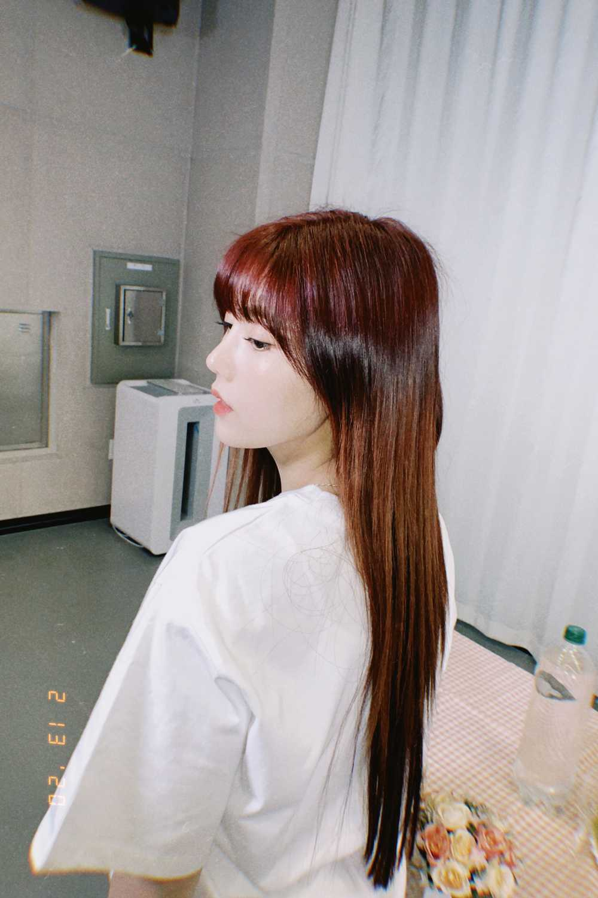

드디어 오늘 17일 입니다 ! 많이 기다렸죠 ..? ㅠㅠ
6시에 음원이랑 뮤비가 나와요 ! 컴백쇼도 나오고 !
당연한걸 또 왜 알려주냐구..? ㅎㅎㅎㅎㅎㅎㅎ또 알려주면 좋은거니까아....ㅎ\(//∇//)\
요즘 귀여운 이모티콘 엄청 찾아보고 있어요
왜냐믄 그냥 이모티콘은 오류..?가 나서 잘 안보이는 경우가 생기더라고염 그래가지구 이모티콘은 쓰고싶고 근데 오류날까봐 못보내겠고 하다보니까 여러가지 생겼네염 근데 좋은거같아 (๑>◡<๑)
1.난 떨린다
2.지금 떨고있다
3.나 떨고있니
きょうはMVがでます。
かおもじはいい。
きょうはきんちょうします。
(๑>◡<๑)
